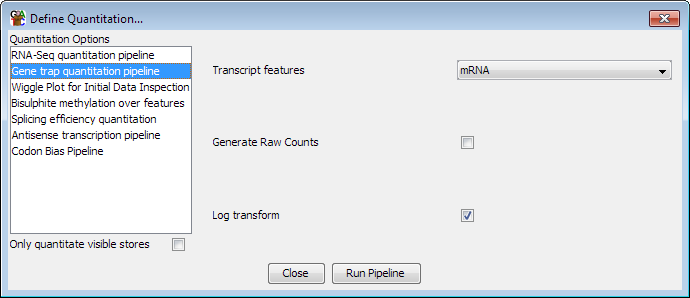

Genetrap quantitation pipeline
This pipeline is specialised for use in GeneTrap experiments. It takes in
a feature track of spliced features and does a read count quantitation. The
unusual aspect of the pipeline is that it will only count a read against
a feature if either:
- It overlaps with an exon of that feature, or
- It sits within an intron, but in the same orientation as the feature
Options

The options you can set for this pipeline are:
- Which type of feature you want to quantitate
- Whether to generate raw counts, or have counts which are normalised by total count
- Whether to log transform the counts